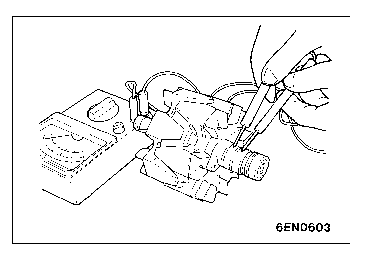
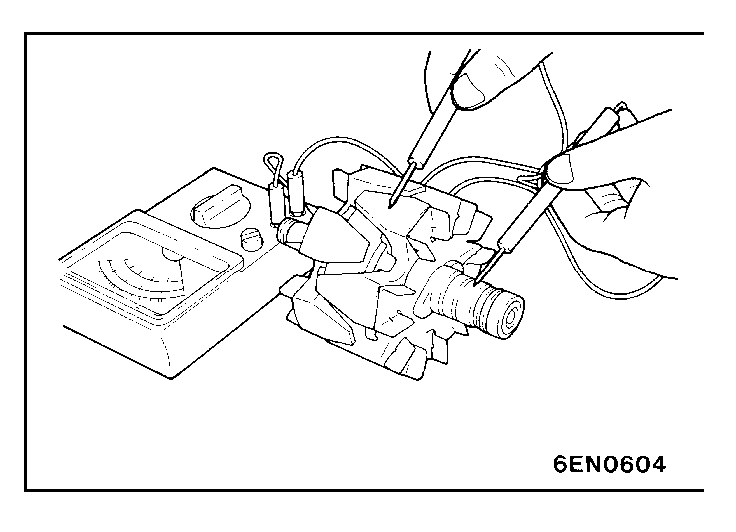
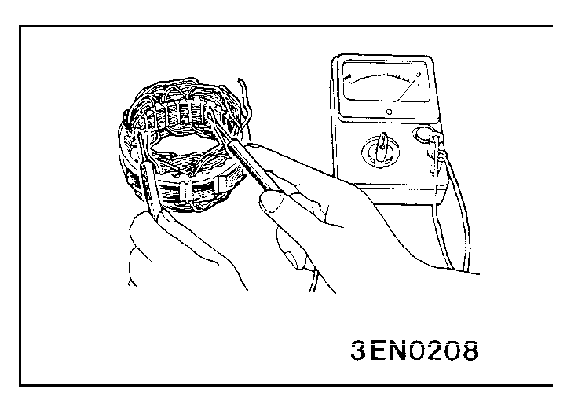
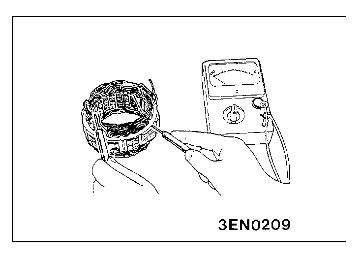
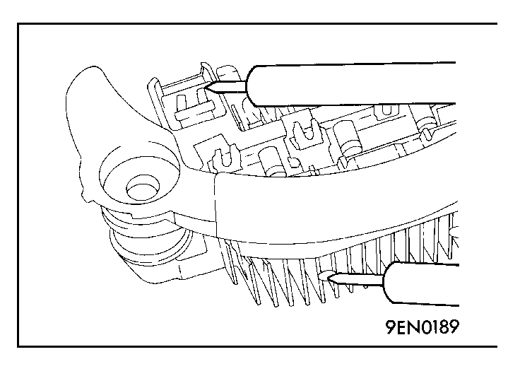
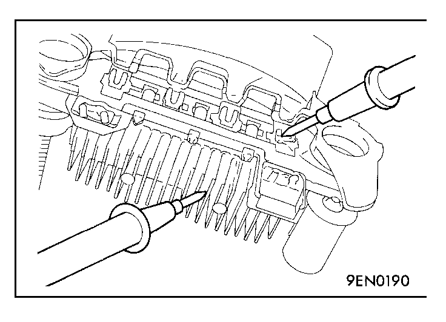
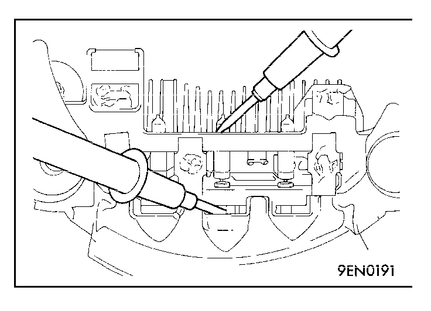
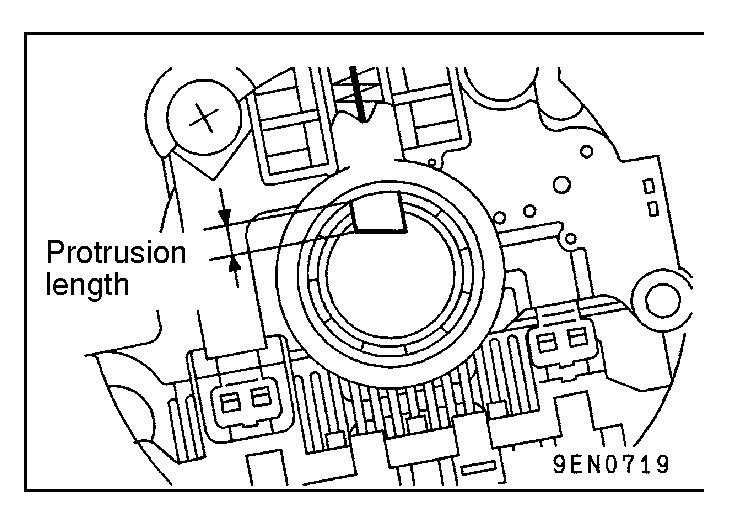
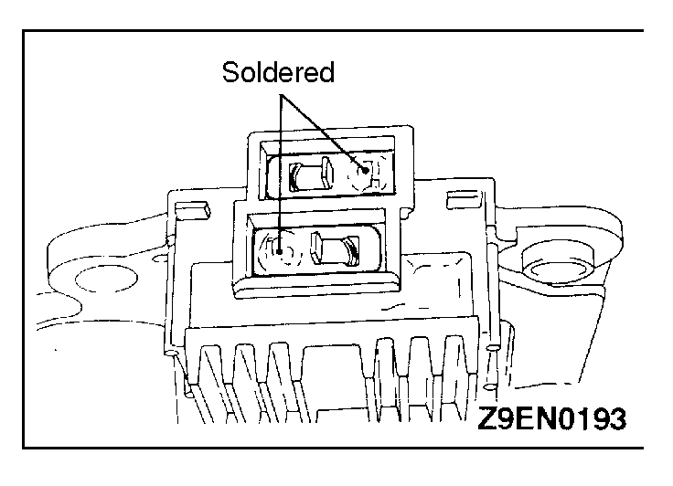

![[Previous]](https://mitsubishitechinfo.com/data/F24S/BUTTONS/fprevg.png)
![[Next]](https://mitsubishitechinfo.com/data/F24S/BUTTONS/fnextg.png)
        
INSPECTION
ROTOR CHECK
(1)Check the continuity between the rotor coil slip rings, and replace the rotor if the resistance value is not at the standard value.
Standard value: 3 - 5 Ω
(2)Check the continuity between the slip ring and core, and if there is continuity, replace the rotor.
STATOR CHECK
(1)Check the continuity between the coil leads, and if there is continuity, replace the stator.
(2)Check the continuity between the coil and core, and if there is continuity, replace the stator.
RECTIFIER CHECK
(1)Inspect the (+) heat sink by checking the continuity between the (+) heat sink and stator coil lead wire connection terminal using a tester probe.
If there is a continuity at both, the diode is short circuited, so replace the rectifier.
(2)Inspect the (-) heat sink by checking the continuity between the (-) heat sink and stator coil lead wire connection terminal using a tester probe.
If there is a continuity at both, the diode is short circuited, so replace the rectifier.
(3) Check the diode trio by connecting an ohmmeter to both ends of each diode and check the continuity of the three diodes.
If there is a continuity at both ends, or if there is no continuity, the diode is damaged so replace the rectifier.
BRUSH CHECK
(1)Measure the length of the brush protrusion shown in the illustration, and replace the brush if the measured value is below the limit value.
Limit: 2 mm (.8 in.) or less
(2)The brush can be removed if the solder of the brush lead wire is removed.
(3)When installing a new brush, insert the brush into the holder as shown in the illustration, and then solder the lead wires.